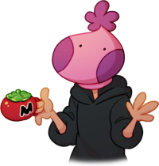

"The ticket to the future is always open." -Rem Saverem, Trigun
| Age | |
| Birthdate | February 10 |
| Zodiac | Aquarius , Taurus , Gemini |
| Pronouns | she/her, they/them (Pronouns.page) |
| Religion | Catholic |
Hi! I'm Bechno Kid.
I'm also known as "Bec/Bech", "BK", "Beekay", or just plain ol' "Bechno".
Don't be fooled by the "Kid", I'm very much an adult! However, I do have interests that many would consider childish, and that's ok.
I am a multi-fandom artist who works full-time as a software developer. I currently live with my two spouses and two dogs. I have a Bachelor's Degree in Computer Science and graduated with honors from my university. I have no formal education when it comes to the arts, and am entirely self-taught.
I have been drawing for more than 20 years, but art has always been just a side hobby for me. My true passion is in coding, whether it is very, VERY basic web design, or software development. I have coded in a variety of languages, but I am always willing to learn more when I can. I am not an expert programmer or artist by any means, though. I just like to learn whatever I can.